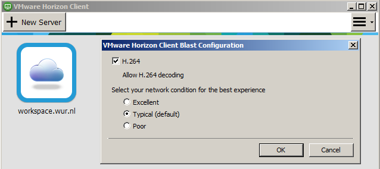

Getting started with WUR VMWare Horizon Linux VDIs
Cloud computing
The IT department of Wageningen University offers a remote desktop solution, where a virtual desktop environment (VDI; a virtual machine with a visual interface) is allocated to a user, who can then access and use it from anywhere in the world. Currently this solution is based on VMware Horizon virtualisation software. Both Windows and Linux VDIs are an option. For this course, each student has access to one Linux VDI for the duration of the course.
There are a number of organisations that offer such virtual machines for use in data processing, ranging from specialised satellite imagery exploitation platforms to commercial cloud computing hosting companies. Usually such virtual machines run a Linux distribution.
Working in a Linux environment, on a cloud computing instance, is one of the learning goals in this course. The VDIs have been prepared and tested for this course and come with a number of tools needed for this course preinstalled, so it is suggested that you make use of them throughout the whole course.
Starting up a Linux VDI
Each WUR student should have access to one Linux VDI running Ubuntu 18.04 that has 2 cores, 4 GiB RAM and 40 GiB space. These resources are not dynamic; if you feel that you need more, feel free to run Linux on your own devices or on local virtual machines on the university machines. If you should have access to a VDI but don’t appear to, please contact the course coordinators and/or the IT help desk.
The VDIs are always running. There are two ways to log in: via a client program or through a web browser.
VMware Horizon Client
On university PCs, the VMware Horizon program is preinstalled, you can launch it from the Start menu. On your own computers or tablets, you can download the client from here. When launched, you should see a server named workspace.wur.nl (on your own computers, add it manually).

If you click the options button in the top right and select Configure VMware Blast, you can choose the quality settings of remote connections. The VDIs are running in the local WUR network, however, due to the large number of students accessing VDIs at one time, bandwidth should be conserved. The default ought to be good enough, but in case the response time is too low or you get disconnects, you should use the setting Poor. If you need perfectly accurate colours (e.g. inspecting rasters) you may deselect H.264 for that session.
Log into the server by double-clicking the workspace.wur.nl icon. Here, you should see a list of VDIs. Double-click (or right-click and Launch) the VDI that is called Linux Geoscripting. You should then be automatically logged into the VDI and see the GNOME Flashback desktop.

MyWorkspace
You can also access the VDI from your web browser without installing a client. For that, go to Workspace, log in with your WUR username (without any prefix) and password, and click on the Linux VDI.
Note, however, that the web version has a few limitations compared to the desktop client. For one, modifier keys (Alt, etc.) are captured by the browser rather than the VDI, and clipboard sharing is more complicated. In addition, launching the VDIs seems to take longer or time out from the web interface at times.
Using the Linux VDI
You can use the VDI as a regular Linux desktop machine. From the file manager (Nautilus) you should be able to see your network shares mounted (“M” is your personal share, M: drive on Windows; “W” is the read-only university share, W: drive on Windows). If they are empty, restart the VDI from the gear menu. Printing to WURprinter should work as well (the print jobs should appear on the university’s printers).
Each VDI is personal. You have root access to your VDI, running sudo will ask for your WUR password.
If need be, you can connect to your VDI via SSH from inside the WUR network (that means using a wired connection). You can find the name of your VDI if you look at the name in the terminal (it is something akin to D744009), or your VDI’s IP by running ip address in the terminal. Then you can log into it by running ssh <username>@<vdiname> or ssh <username>@<ip> and entering your password (note: you must be connected to wired internet on campus, wireless does not seem to work). SSH is useful if you need to run expert tasks on the terminal, such as updating all packages on the system. You can also connect to servers (such as Jupyter or RStudio) this way. Similarly, you can use sftp to download and upload files this way.
Stopping the Linux VDI
The VDIs at the moment are made to be always running. Do not shut them down, otherwise you will not be able to start them back up without contacting IT support! The clean way to terminate a VDI session is to log out. You can do this from the gear menu → Log Out, this will stop your session automatically and quit the VMware Horizon client. You can also log out from within the VMware Horizon client by pressing the Log off button at the top.
If you wish to leave the VDI running without stopping all programs, you can just close the VMware Horizon client window. The next time you log in, you will be back where you left off, with all programs running.
Troubleshooting issues
In case something goes wrong, you are able to restart the VDI from the client. There are two options: Restart and Reset (in the desktop client they are in the menu bar and in the context menu when you right-click on a VDI; on MyWorkspace they are in the sidebar). Restart restarts the VDI gracefully (it asks Linux to restart itself). Reset is a forced restart, equivalent to cutting the power, which may lead to loss of data, so use that only as a last resort. Either way it might take up to 10 minutes for the restart to finish.
If you are using the VDI for a long time, you may run into the issue that after logging off, logging in is no longer automatic and asks for your password. This means that your VMWare Horizon session has expired. You can restart the client to refresh the session (or just enter your username and password in the VDI).
At the moment of writing, the M and W network shares sometimes disconnect, you need a restart to make them reappear again.
If you see that when you enter text, a keypress gets repeated several times (e.g. if you type “geoscripting” you get “geeeeoscriiiipting”), it means that your connection is too poor. Either lower the display quality, or connect from a PC that is connected to the wired internet.
If you use the web client (and sometimes the desktop client), you may run into an error about too many desktop sources. This means that you have a session already running (or perhaps the last one didn’t terminate cleanly). In this case, right-clicking on the connection and choosing “log out” can solve the problem by logging the other session out.
In case of technical problems with VDI instances themselves (and not the software on them) that you cannot solve yourself, accidental shutdowns, or for catastrophic failures that would require a reset of your VDI to the initial state, you can write an email to the IT helpdesk, mentioning Linux VDI in the email header.